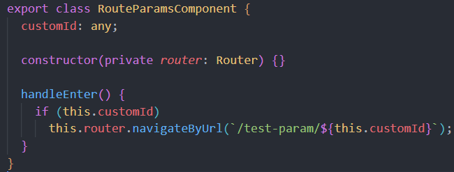
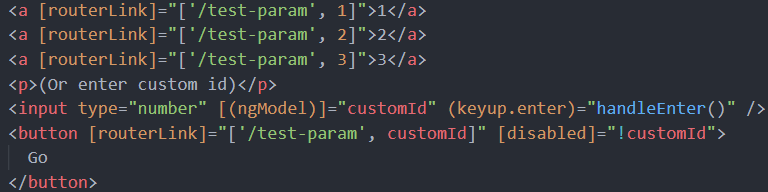
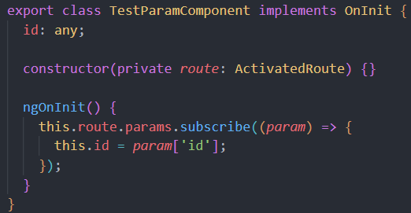
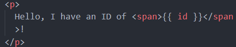
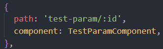

Route params are typically dynamic
- For example, you may see a list of items while shopping online
-
When you click on an item, you expect to see a new page,
with more detail of that selected item
-
The new component/page needs to know which item to load,
this comes from the route params, likely sending an HTTP
request to then get that item from the backend, passing its ID/primary key
in a GET request
Steps in this example
- Create a few links (here we have '1', '2', and '3')
-
Add [routerLink]="['/test-param', 1]" to the HTML tags you'd like to route
from when clicked, where '1' is the ID
-
Create a new component that you'd like to render when this link is
clicked, here we
are using 'TestParamComponent', make sure to add this component to your
declarations array within app.module.ts
-
Within app-routing.module.ts, add {{ "{" }} path: 'test-param/:id',
component: TestParamComponent, {{ "}" }}
to the routes array, notice '/:id' - this is where the id passed to the
route will be passed
-
In the component we are navigating to (TestParamComponent in this
example), use the constructor
to inject the ActivatedRoute
-
OnInit, we are able to access this parameter from the url, and assign it
to a variable, 'id' in this case
-
Now, you can use that variable in your template, or maybe you'd like to
send an HTTP request to
GET an item by ID (ex. http://localhost:8080/api/toys/{{ "{" }}id{{
"}"
}})
(this.component.ts)

(this.component.html)

(heading-to.component.ts)

(heading-to.component.html)

(app-routing.module.ts)
